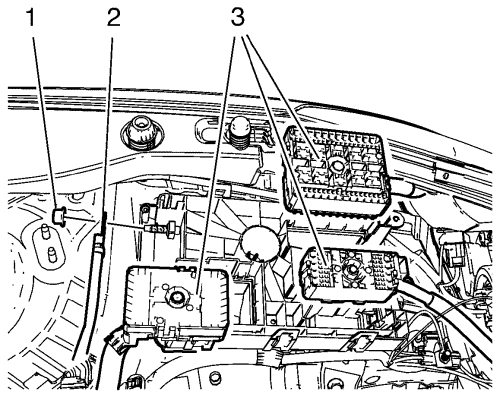
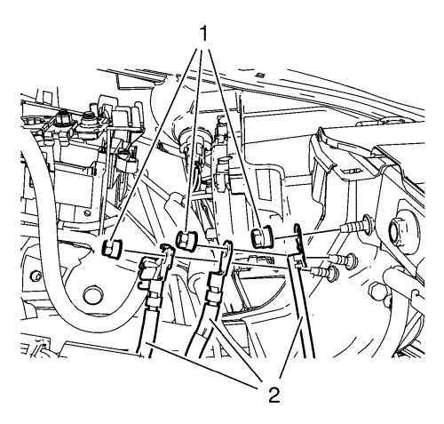
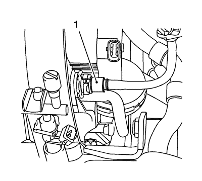
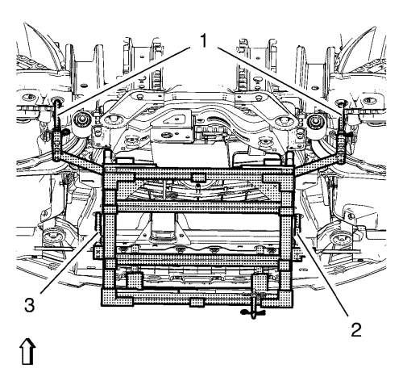
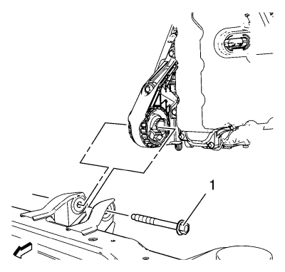
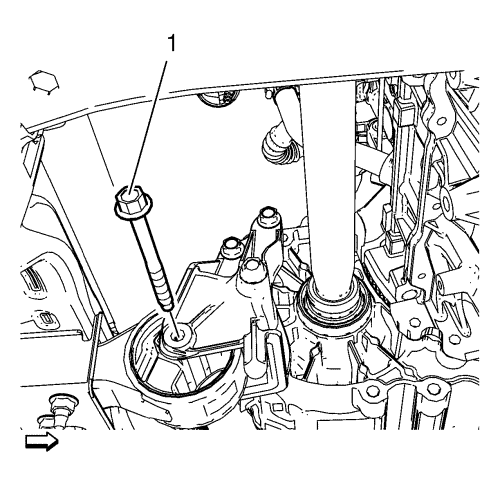

Sustitución del motor — Cambio manual D16
Herramientas especiales
| • | CH-807 Tapones de cierre |
| • | CH-904 Bastidor inferior |
| • | CH-49289 Adaptador de centrado |
| • | CH-49290 Cambio/motor de montaje |
| • | EN-49271 Soporte de motor |
Si desea informarse sobre herramientas regionales equivalentes. Consulte Herramientas especiales → 1.6L LXT.
Procedimiento de desmontaje
- Desmonte el tornillo inferior del eje intermedio de la dirección. Consultar Sustitución del eje intermedio de la dirección .
- Abra el capó.
- Recubra el agente frigorífico. Consultar Recuperación y recarga del agente frigorífico .
- Desmonte la bandeja de la batería. Consultar Sustitución de la bandeja de la batería .

- Desmonte el tubo de llenado del contenedor de disolvente del lavador del parabrisas (1).

- Desmonte la cubierta del bloque de fusibles del compartimento delantero (1).

- Desmonte los 3 tornillos del bloque de fusibles del compartimento delantero (1).
- Desmonte el bloque de fusibles del compartimento delantero (2).

- Quite los 3 enchufes del mazo de cables (3).
- Desconecte el enchufe del mazo de cables del bloque de fusibles del compartimento delantero.

- Desmonte las 3 tuercas de masa (1) y aparte los 3 mazos de cables (2).

- Desconecte los 2 enchufes del mazo de cables (1, 2).
- Extraiga la carcasa del purificador de aire. Consultar Sustitución del filtro de aire .
- Desmonte el panel del paragolpes delantero. Consultar Sustitución del panel del parachoques delantero .
- Desmonte el conjunto de llanta y neumático delantero. Consultar Desmontaje y montaje de la rueda y el neumático .
- Vacíe el sistema de refrigeración. Consultar Drenaje y llenado del sistema de refrigeración .
- Desenganche el vaso de expansión del radiador.
- Aparte el vaso de expansión del radiador.
- Desmonte del cambio la palanca del cambio manual y el cable de la palanca selectora. Consultar Sustitución de los cables de la palanca selectora y de la palanca de cambio del cambio manual .
- Desmonte el tubo flexible de entrada del calefactor de la pared frontal. Consultar Sustitución del tubo flexible de entrada del calefactor. → 2.0L Diésel LNP → 1.4L LUJ → 1.6L LDE, LXV y 1.8L 2H0 → 1.6L LXT y L2W → 2.0L Diésel LLW .
- Desmonte el tubo flexible de salida del calefactor de la pared frontal. Consultar Sustitución del tubo flexible de salida del calefactor → 2.0L Diésel LNP → 1.4L LUJ → 1.6L LDE, LXV y 1.8L 2H0 → 1.6L LXT y L2W → 2.0L Diésel LLW .

- Desconecte el tubo de depresión de refuerzo (1) del colector de admisión.
- Colecte un recipiente recogedor bajo el vehículo.
- Desconecte el tubo delantero del cilindro del actuador del embrague. Consultar Sustitución del tubo delantero del cilindro actuador del embrague → LHD - MZ0,MZ4,MR5,MF3 → RHD - M32, MF3, MZ0, MZ4, MR5 → Volante a la derecha con D33 → Volante a la derecha con D16 → Volante a la izquierda con D33 → Volante a la izquierda con D16 .
- Desconecte, de la válvula de ventilación de emisión de vapores, el tubo de ventilación del depósito de combustible.
- Cierre los aireadores con los tapones de cierre CH 807.
- Desconecte el tubo de llenado de combustible del tubo de distribución de inyección de combustible multipuerto.
- Cierre los aireadores con los tapones de cierre CH 807.
- Desmonte el tornillo del depósito del líquido de la servodirección.
- Desenganche el depósito del líquido del servofreno y apóyelo en el motor.

- Desmonte la tuerca del tubo flexible del compresor y el condensador del A/C (1) del condensador del A/C (2).

- Desmonte la tuerca del tubo flexible del compresor y el condensador del A/C (1)del tubo flexible de refrigerante (2).
- Desmonte la tuerca del conjunto del tubo del evaporador del aire acondicionado del condensador del aire acondicionado.
- Desenganche del radiador el tubo flexible de salida.
- Desmonte el soporte del radiador. Consultar Sustitución del soporte de apoyo del radiador .
- Elevar el vehículo y soportarlo de manera segura. Consultar Elevación y soporte en alto del vehículo .
- Retirar el protector de salpicaduras del habitáculo frontal. Consultar Sustitución del protector de salpicaduras del habitáculo frontal .
- Desmonte la varilla de la barra estabilizadora del amortiguador en los dos lados. Consultar Sustitución de la varilla de la barra estabilizadora .
- Desmonte de la mangueta la barra de acoplamiento exterior del varillaje de la dirección en los dos lados. Consultar Sustitución la barra de acoplamiento exterior del varillaje de la dirección .
- Desmonte de la mangueta el brazo de apoyo inferior delantero. Consultar Sustitución del brazo de apoyo inferior .
- Desmonte los ejes de las ruedas delanteras de los cubos de rueda. Consultar Sustitución del árbol impulsor de la rueda delantera - Lado derecho y Sustitución del árbol impulsor de la rueda delantera - Lado izquierdo .
- Desconecte los sensores de velocidad de la rueda en los dos lados.
- Desmonte del bastidor los retenes del mazo de cables del sensor de velocidad de la rueda.
- Desenganche los 2 mazos de cables del ventilador de refrigeración del motor (1, 2) del bastidor.
- Desmonte el tubo flexible de escape. Consultar Sustitución del tubo flexible de escape → 2.0L Diésel LLW .
- Monte el soporte del motor/cambio Consulte (soporte del motor/cambio) Soporte del motor/cambio .
- Desmonte el soporte del motor (lado derecho). Consultar Sustitución del alojamiento del motor - lado derecho .
- Desmonte el soporte del motor (lado izquierdo). Consultar Sustitución del soporte de montaje de la caja de cambios - lado izquierdo .

- Levante el bastidor inferior CH-904 y el adaptador CH-49289 con el elevador hidráulico hasta que toque el bastidor.

Nota: Los pasadores de posicionamiento (2, 3) del adaptador CH-49289 deben introducirse en los orificios del bastidor del tren motriz.
- Compruebe si se necesita realizar la alineación de las ruedas.
Extraiga los pasadores de posicionamiento (1) y trate de introducirlos en los orificios de los bajos.
Si los pasadores guía NO pueden introducirse, será necesario realizar Medición de la alineación de las ruedas después del montaje del bastidor del tren motriz.

- Desmonte los pernos delanteros del bastidor (2)
- Desmonte los pernos traseros del bastidor (3)
- Desmonte los refuerzos del bastidor (4).
- Saque el bastidor (4) con la unidad del cambio del motor del vehículo.
- Desmonte el semieje derecho de la caja de cambios. Consultar Sustitución del árbol impulsor de la rueda delantera - Lado derecho .
- Desmonte el semieje izquierdo de la caja de cambios. Consultar Sustitución del árbol impulsor de la rueda delantera - Lado izquierdo .
- Desmonte el tubo flexible de salida del depósito del líquido de la servodirección Consultar Sustitución del manguito de salida del depósito de líquido de la dirección asistida. .

- Elimine la abrazadera del tubo flexible de salida del radiador (3) del tubo de agua (4).
- Desmonte el tubo flexible de entrada del radiador (1) de la carcasa del termostato (5).
- Monte un cable adecuado en los 3 soportes de elevación del motor.
- Monte un mecanismo de elevación del motor adecuado en el cable.
- Extienda el mecanismo de elevación del motor hasta que el cable de acero se tense un poco.

- Extraiga el perno pasante del soporte de la caja de cambios de la parte delantera (1).

- Extraiga el perno pasante de montaje al soporte del cambio (1).
- Coloque la unidad del cambio del motor en un palé de madera.
- Afloje los 8 tornillos del cambio y desmonte 7 de ellos. Consultar Sustitución de la caja de cambios .
Nota: Es necesario un segundo técnico.
- Desmonte el último tornillo del cambio y el cambio.
- Monte el motor en el soporte de motor EN-49271.
- Transfiera las piezas según sea necesario.
Procedimiento de montaje
- Desmonte el motor del soporte de motor EN-49271.
- Coloque el motor en un palé de madera.
Nota: Es necesario un segundo técnico.
- Monte el cambio y un tornillo del cambio.
- Instale los 7 tornillos del cambio.
Precaución:Consulte Precaución con las fijaciones en la sección Prólogo.
- Apriete los 8 tornillos del cambio. Consultar Sustitución de la caja de cambios .
- Coloque la unidad del cambio del motor en el bastidor delantero.
- Monte el perno pasante de montaje al soporte del cambio (1) y apriételo hasta 100 N·m (74 lib. pie).
- Monte el tornillo pasante del soporte del cambio (1) y apriételo a 58 N·m (43 lib. pie).
- Desmonte el cable de los 3 soportes de elevación del motor.
- Monte el tubo flexible de entrada del radiador (2).
- Monte la abrazadera del tubo flexible de entrada del radiador (1) en la carcasa del termostato (5).
- Monte el tubo flexible de salida del radiador (2).
- Monte la abrazadera del tubo flexible de salida del radiador (3) en el tubo de agua (4).
- Monte el tubo flexible de salida del depósito del líquido de la servodirección. Consultar Sustitución del manguito de salida del depósito de líquido de la dirección asistida. .
- Monte el semieje derecho de la caja de cambios. Consultar Sustitución del árbol impulsor de la rueda delantera - Lado derecho .
- Monte el semieje izquierdo de la caja de cambios. Consultar Sustitución del árbol impulsor de la rueda delantera - Lado izquierdo .
Nota: Los pernos de posicionado (1) del adaptador CH-49289 deben extenderse para guiarlos hasta los orificios de los bajos.
- Meta el bastidor (1) con la unidad del cambio del motor en el vehículo.
- Monte los refuerzos del bastidor (4).
- Monte los tornillos del bastidor delantero (2) Apriete sólo con la mano.
- Monte los pernos de refuerzo (3). Apriete sólo con la mano.
- Apriete los tornillos del bastidor trasero (2) y apriételos a 90 N·m (67 lib. pie) +130°.
- Apriete los tornillos del bastidor delantero (1) y apriételos a 120 N·m (89 lib. pie) +130°.
- Baje el CH-49289 con el elevador hidráulico hasta que se pueda desmontar.
- Monte el soporte del motor (lado derecho). Consultar Sustitución del alojamiento del motor - lado derecho .
- Monte el soporte del motor (lado izquierdo). Consultar Sustitución del soporte de montaje de la caja de cambios - lado izquierdo .
- Desmonte el soporte del motor/cambio Consultar Soporte del motor/cambio .
- Monte el tubo flexible de escape. Consultar Sustitución del tubo flexible de escape → 2.0L Diésel LLW .
- Enganche los 2 mazos de cables del ventilador de refrigeración del motor (1, 2) en el bastidor.
- Monte los retenes del mazo de cables del sensor de velocidad de la rueda en el bastidor.
- Conecte el sensor de velocidad de la rueda en los dos lados.
- Monte los ejes de las ruedas delanteras en los cubos de rueda. Consultar Sustitución del árbol impulsor de la rueda delantera - Lado derecho .
- Monte el brazo de apoyo inferior delantero en la mangueta. Consultar Sustitución del brazo de apoyo inferior .
- Monte la barra de acoplamiento exterior del varillaje de la dirección en la mangueta en los dos lados. Consultar Sustitución la barra de acoplamiento exterior del varillaje de la dirección .
- Monte la varilla de la barra estabilizadora en el amortiguador en los dos lados. Consultar Sustitución de la varilla de la barra estabilizadora .
- Monte el protector contra salpicaduras del compartimento delantero. Consultar Sustitución del protector de salpicaduras del habitáculo frontal .
- Compruebe el nivel de aceite del cambio. Consultar Revisión del nivel de aceite del cambio .
- Bajar el vehículo.
- Monte el soporte de apoyo del radiador. Consultar Sustitución del soporte de apoyo del radiador .
- Enganche el tubo flexible de salida del radiador en el radiador.
- Utilice una junta de sistema NUEVA. Consultar Sustitución de la junta del sistema de aire acondicionado .
- Monte la tuerca del conjunto del tubo flexible del evaporador del aire acondicionado en el condensador del aire acondicionado y apriétela a 19 N·m (14 lib. pie).
- Utilice una junta de sistema NUEVA. Consultar Sustitución de la junta del sistema de aire acondicionado .
- Monte la tuerca del tubo flexible del condensador y el compresor del A/C (1) en el condensador del A/C (2). Apriete la tuerca a 19 N·m (14 lib. pie).
Nota: Utilice una junta tórica nueva. Consultar Sustitución de la junta tórica del aire acondicionado .
- Utilice una junta de sistema NUEVA. Consultar Sustitución de la junta del sistema de aire acondicionado .
- Monte la tuerca del tubo flexible del condensador y el compresor del A/C (1) en el tubo flexible del agente frigorífico (2). Apriete la tuerca a 19 N·m (14 lib. pie).
- Enganche el depósito de líquido de la servodirección.
- Monte el tornillo del depósito del líquido de la servodirección y apriételo a 9 N·m (80 lib. pulg.).
- Quite los tapones de cierre CH 807.
- Conecte el tubo de llenado de combustible en el tubo de distribución de inyección de combustible multipuerto.
- Quite los tapones de cierre CH 807.
- Conecte el tubo de ventilación del depósito de combustible en la válvula de ventilación de emisión de vapores.
- Desmonte el tubo flexible de salida del calefactor de la pared frontal. Consultar Sustitución del tubo flexible de salida del calefactor → 2.0L Diésel LNP → 1.4L LUJ → 1.6L LDE, LXV y 1.8L 2H0 → 1.6L LXT y L2W → 2.0L Diésel LLW .
- Conecte el tubo delantero del cilindro del actuador del embrague. Consultar Sustitución del tubo delantero del cilindro actuador del embrague → LHD - MZ0,MZ4,MR5,MF3 → RHD - M32, MF3, MZ0, MZ4, MR5 → Volante a la derecha con D33 → Volante a la derecha con D16 → Volante a la izquierda con D33 → Volante a la izquierda con D16 .
- Purgue el sistema de embrague hidráulico. Consultar Purga del sistema de embrague hidráulico .
- Rellene el depósito con líquido de embrague/frenos hasta el nivel máximo (MAX).
- Conecte el tubo de depresión de refuerzo (1) en el colector de admisión.
- Monte el tubo flexible de entrada del calefactor en la pared frontal. Consultar Sustitución del tubo flexible de entrada del calefactor. → 2.0L Diésel LNP → 1.4L LUJ → 1.6L LDE, LXV y 1.8L 2H0 → 1.6L LXT y L2W → 2.0L Diésel LLW .
- Monte el tubo flexible de salida del calefactor en la pared frontal. Consultar Sustitución del tubo flexible de salida del calefactor → 2.0L Diésel LNP → 1.4L LUJ → 1.6L LDE, LXV y 1.8L 2H0 → 1.6L LXT y L2W → 2.0L Diésel LLW
- Monte la palanca del cambio manual y el cable de la palanca selectora en el cambio. Consultar Sustitución de los cables de la palanca selectora y de la palanca de cambio del cambio manual .
- Enganche el vaso de expansión del radiador.
- Llene el sistema de refrigeración. Consultar Drenaje y llenado del sistema de refrigeración .
- Monte el conjunto delantero de neumático y llanta. Consultar Desmontaje y montaje de la rueda y el neumático .
- Monte el panel del parachoques delantero. Consultar Sustitución del panel del parachoques delantero .
- Monte la carcasa del filtro de aire. Consultar Sustitución del filtro de aire .
- Conecte los 2 enchufes del mazo de cables (1, 2).
- Monte los 3 mazos de cables (2).
- Monte las 3 tuercas de masa (1) y apriételas a 9 N·m (80 lib. pulg.).
- Enganche los 3 enchufes del mazo de cables (3).
- Conecte el enchufe del mazo de cables en el bloque de fusibles del compartimento delantero.
- Monte el bloque de fusibles del compartimento delantero (2).
- Monte los 3 tornillos del bloque de fusibles del compartimento delantero (1) y apriételos a 22 N·m (16 lib. pulg.).
- Monte la cubierta del bloque de fusibles del compartimento delantero (1).
- Monte el tubo de llenado del contenedor de disolvente del lavador del parabrisas.
- Monte la bandeja de la batería. Consultar Sustitución de la bandeja de la batería .
- Vacíe y llene el sistema de agente frigorífico. Consultar Recuperación y recarga del agente frigorífico .
- Compruebe el nivel de aceite y rellene con aceite de motor nuevo si es necesario.
- Cierre el capó.
- Monte el tornillo inferior del eje intermedio de la dirección. Consultar Sustitución del eje intermedio de la dirección .
| © Copyright Chevrolet. All rights reserved |